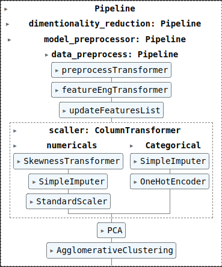

Tabular Data - DATA MODELING - PIPELINE
One diagram of a scikit-learn pipeline that chains preprocessing, scaling, PCA and agglomerative clustering into a single flow.
One diagram of a scikit-learn pipeline: preprocessing, scaling, PCA, then agglomerative clustering, chained into a single flow. By the end you'll see why people wire the steps together instead of running them by hand.
A pipeline is a recipe written down. Data goes in at one end, passes through each step in order, and comes out the other as clusters. Same steps, same order, every time.
Table of Content
- Tabular Data - DATA MODELING - PIPELINE
- Table of Content
- PipeLine
PipeLine
